РЕЦЕПТ ОСЕТИНСКОГО
Продукты: Мука - 500 г (3,2 стакана) Кефир - 400 мл Дрожжи - 1,5 ч.л. Желток для смазывания - 1 шт. Сыр брынза овечья - 250 г (можно заменить любой другой) Сыр твёрдый - 250 г Масло сливочное растопленное - 1 ст.л. Масло сливочное для смазки - 30 г Масло растительное - 1 ст.л. Сахар - 1 ст.л. Соль - 1 ч.л.
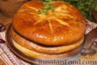Подготовьте ингредиенты для осетинские пирогов.
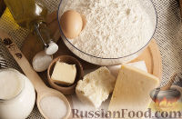Подтеплите немного кефир и разведите в нём дрожжи.
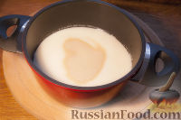Влейте оба вида масла.
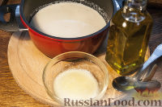Добавив соль и сахар, размешайте.
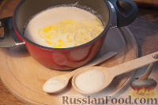Затем, просеивая муку, начинайте замешивать тесто. Чтобы оно было воздушным и в результате хорошо подошло, то постарайтесь его месить порядка 10 минут. Тесто должно получиться в меру эластичным.
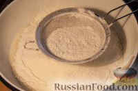Отправьте миску в тепло и забудьте на 1,5 часа. Пусть тесто подходит.
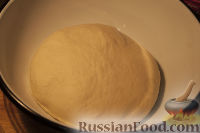Приготовьте начинку. Смешайте сыр и брынзу, предварительно потерев их на крупную тёрку.
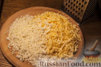Поглядывайте на тесто, его объём должен увеличиться в полтора-два раза.
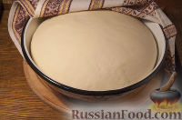Круговыми движениями руки обомните его. Разделите на три приблизительно равные части.
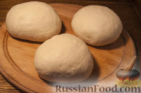По одной раскатывайте в круг, ориентируясь на края доски, и награждайте одной третьей частью начинки.
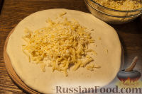Заворачивайте и тщательно защипывайте края, одновременно формируя шары с начинкой в середине.
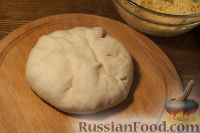Приплюсните и снова аккуратно раскатайте их в круглые лепёшки.
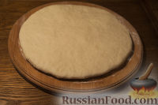Сделайте по периметру полуфабрикатов симметричные надрезы. Затем перенесите на противень, укрытый пекарской бумагой.
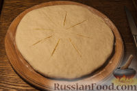Когда лепёшки немного подойдут (минут через 7-10), смажьте их желтком и отправляйте в духовку. Температуру выставьте приблизительно 170-180 градусов. Ждите 20-25 минут и доставайте румяные пироги.
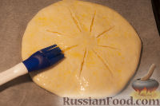Каждый пирог ещё горячим смазывайте сливочным маслицем, укладывая их, традиционно, в стопку.
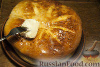Дайте выпечке пару минут остыть, немного пропитаться маслом и подавайте.
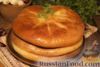Это очень вкусно. Попробуйте!
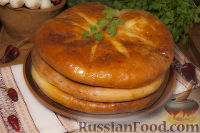